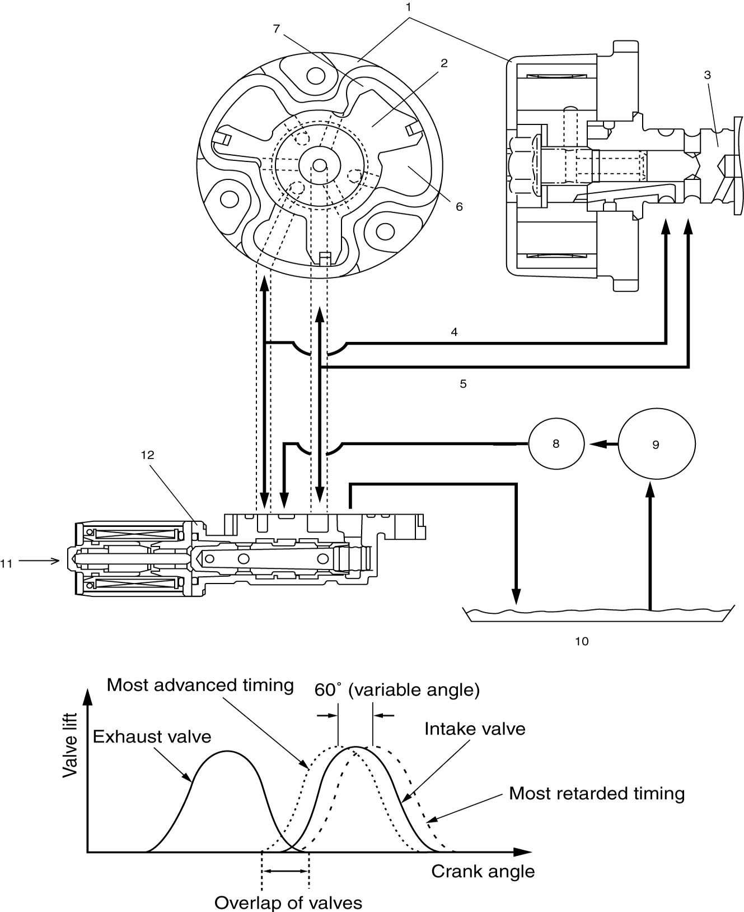
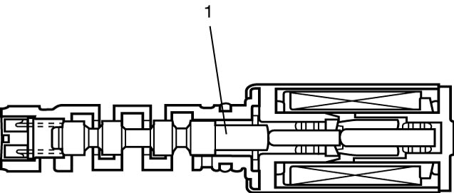
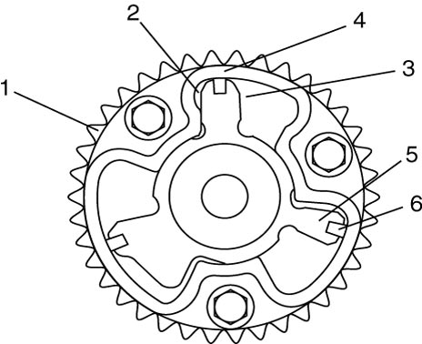
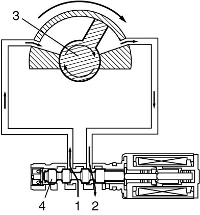
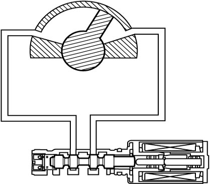
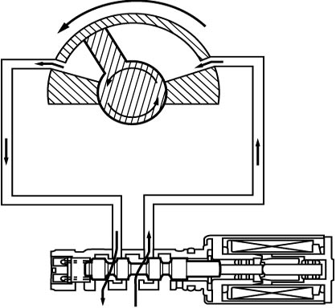

1D
| VVT System Description |
System Description
The VVT system continuously varies the intake valve timing in response to the engine operating condition and optimizes it.
The optimized intake valve timing produces such an air intake with high efficiency that both the higher power generation and lower fuel consumption can be attained in the whole engine speed range from low to high. In the area of the average engine load, low emission of nitrogen oxides (NOx) and high fuel efficiency can also be attained by making the valve opening overlap between the intake and exhaust valves longer.
The intake valve timing is varied by the VVT actuator (1) which varies the rotational phase between the intake camshaft (3) and sprocket. The rotor (2) in the VVT actuator is actuated by switching or adjusting the hydraulic pressure applied to the chambers for the timing advancing (7) and/or retarding (6). To switch or adjust the hydraulic pressure appropriately, ECM operates the OCV (12) according to the engine speed, intake air value, throttle opening, engine coolant temperature and camshaft position (angle).

 "Expand image")
| 4. | Oil passage to chamber for timing retarding | 8. | Oil filter | 10. | Oil pan |
| 5. | Oil passage to chamber for timing advancing | 9. | Oil pump | 11. | Control signal from ECM |
Operation Description
OCV
The OCV switches and adjusts the hydraulic pressure applied to the VVT actuator by moving the valve spool (1) according to the duty cycle pulses from ECM. Through this control, the valve timing is varied continuously. ECM outputs duty signal of about 240 Hz to the OCV.

 "Expand image")
VVT actuator
The VVT actuator has chambers for timing advancing (2) and retarding (3) which are separated by the rotor (5). The rotor turns according to change in balance between the hydraulic pressures applied to both chambers. The sprocket (1) is installed on the housing (4) and the rotor is secured on the camshaft by bolts. Therefore, the rotation of the rotor changes the phase between the sprocket and camshaft.

 "Expand image")
| 6. | Seal |
Timing advancing
When the duty ratio of the signal from the ECM to the intake OCV is high, the valve spool (4) of the OCV moves to the left. By this valve spool movement, the pressurized oil (1) is led into the timing advancing chamber and the oil in the timing retarding chamber is drained. As a result, the rotor (3) turns in the timing advancing direction.

 "Expand image")
| 2. | Drain |
Timing holding
When ECM keeps the duty ratio of the signal sent to the OCV constant, the valve spool of the OCV is held in the same position. Because this condition creates no oil pressure change in both chambers, the rotor is fixed at a target position.

 "Expand image")
Timing retarding
When the duty ratio of the signal from the ECM to the intake OCV is low, the valve spool of the OCV moves to the right. By this valve spool movement, the pressurized oil is led into the timing retarding chamber and the oil in the timing advancing chamber is drained. As a result, the rotor turns in the timing retarding direction.

 "Expand image")
VVT Operation
| Driving condition | Valve timing | Target of control | Effect |
|---|---|---|---|
| Engine running at idle speed | Most retarded | To shorten the valve opening overlap to prevent the exhaust gas counterflow to intake manifold. | Stabilization of the engine rotation at idle speed. |
| Average engine load range | To the advanced side | To lengthen the valve opening overlap to enhance the internal exhaust gas recirculation and reduce the pumping loss. | Improvement of the fuel efficiency. Lowering of the exhaust emission. |
| Light engine load range | To the retarded side | To shorten the valve opening overlap to prevent the exhaust gas counterflow to intake manifold. | Keeping of the engine stability. |
| Low or average engine speed range with heavy engine load | To the advanced side | To advance the closing timing of the intake valve to improve the volumetric efficiency. | Improvement of generating the engine torque at low and average engine speed. |
| High engine speed range with heavy engine load | To the retarded side | To retard the closing timing of the intake valve to improve the volumetric efficiency. | Improvement of generating the engine power. |
| Low engine coolant temperature | Most retarded | To shorten the valve opening overlap to prevent the exhaust gas counterflow to intake manifold and reduce the fuel increasing. To slow the fast idle speed of the engine as a result of stabilizing the engine idling. |
Stabilization of engine speed at fast idle. Improvement of the fuel efficiency. |
| At engine starting and stopping | Most retarded | To shorten the valve opening overlap to prevent the exhaust gas counterflow to intake manifold. | Improvement of engine start ability. |